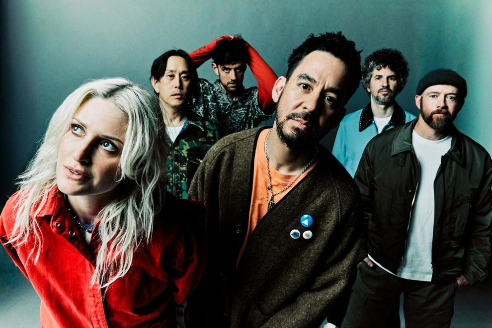

Linkin Park's album From Zero is a comeback record that features new co-vocalist Emily Armstrong
Marks a return to the band's alt-rock/nu-metal sound, with some reviewers calling it their most inspired work in years.

Linkin Park reunite with new singer seven years after Chester Bennington’s death
Nu-metal band will release first album since 2017 later this year
Linkin Park have announced they are reuniting seven years after the death of singer Chester Bennington. The band’s line-up will include original members Mike Shinoda, Brad Delson, Dave “Phoenix” Farrell and Joe Hahn, alongside new singer Emily Armstrong of LA rock band Dead Sara. Songwriter and producer Colin Brittain is also joining the band as a drummer. The announcement of their reunion was accompanied by new single “The Emptiness Machine.” They will release an album titled From Zero on November 15, their first record since 2017’s One More Light. The band have also announced details of a six-date world tour, which will see them appear at the Kia Forum in Los Angeles on September 11, the Barclays Center in New York on September 16, the Barclays Arena in Hamburg, Germany on September 22, The O2 in London on September 24, the Inspire Arena in Seoul, South Korea on September 28, and the Coliseo Medplus in Bogota, Colombia on November 11.

In a statement, Shinoda said: “Before Linkin Park, our first band name was Xero. This album title refers to both this humble beginning and the journey we’re currently undertaking. Sonically and emotionally, it is about past, present, and future —embracing our signature sound, but new and full of life. “It was made with a deep appreciation for our new and longtime bandmates, our friends, our family, and our fans. We are proud of what Linkin Park has become over the years, and excited about the journey ahead.” He added: “The more we worked with Emily and Colin, the more we enjoyed their world-class talents, their company, and the things we created. We feel really empowered with this new lineup and the vibrant and energized new music we’ve made together. We’re weaving together the sonic touchpoints we’ve been known for and still exploring new ones.” From Zero will consist of 11 tracks: “From Zero (Intro)”, “The Emptiness Machine”, “Cut The Bridge”, “Heavy Is The Crown”, “Over Each Other”, “Casualty”, “Overflow”, “Two Faced”, “Stained”, “IGYEIH” and “Good Things Go.”
Linkin Park reunite with new singer seven years after Chester Bennington’s death
Nu-metal band will release first album since 2017 later this year
Chester Bennington's "insane vocals" are often attributed to his ability to switch from melodic singing to powerful screams, with the song "Given Up" being a prime example of his most intense screaming, including a sustained 17-second scream. Other vocal highlights include the emotional delivery in "Crawling," the live performance of "Qwerty," and the vulnerability in "Numb" and "In the End".